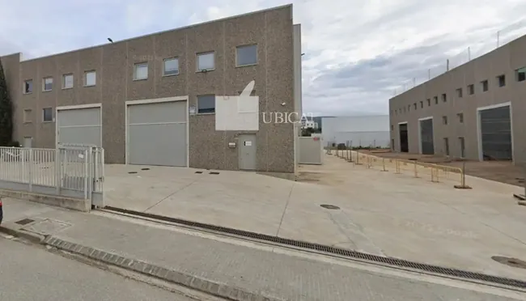
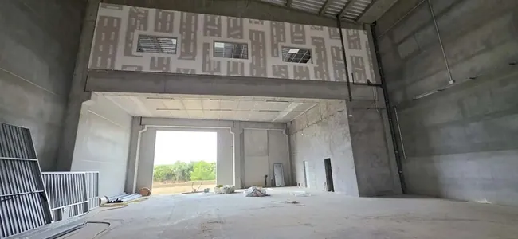
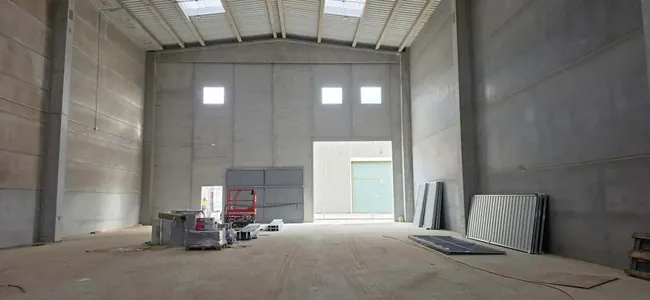

Plano · tocar un número de la lista lo marca acá
Letras: condiciones go/no-go · o: obra necesaria · números: lo que hay que medir o confirmar · c: lo que el chequeo de circulación marca hoy · trazos: el área o la franja de la cota · la línea azul: el largo libre a lo largo de la pista · ejes x/z: el origen de las cotas.
Condiciones go/no-go · si alguna sale mal, la nave se cae o hay que rehacer el layout
- Se decide en la visitaDecide: ≥ 7,3 m libres bajo jácenas, cerchas, luminarias e instalaciones en la vertical de la plataforma: plataforma a 4,5 m + 2,4 m del rider + 0,4 m de instalaciones (PROGRAMA §1). Si da menos, se baja la plataforma (a lo medido − 2,8 m), nunca el run-out.Altura libre medida con láser sobre la plataforma (m):
5 notas del layout
fuente de la cota: publicada · Calisea: «7,40 m / 11,43 m (punto + bajo / + alto)». Contradice a Bardés (9,50 libres), Blanquerna (9 m) y a las fotos (≈9,4 m bajo jácena, ver notes.crossCheck): por la regla de PROGRAMA §4 se toma la más conservadora para dimensionar
riesgo: Altura: 7,40 de Calisea contra 9,50 de Bardés, 9 de Blanquerna y ≈9,4 medido en fotos. Hay que medir con láser bajo jácenas, luminarias y conductos de aerotermia. Si se confirman ≥ 9 m, la plataforma puede subir a 5 m (rampa ≥ 12 m, a costa de 1 m de llano).
riesgo: Visor con clearHeight 7,40: dibuja las jácenas desde 7,40 m hasta la cubierta (≈3-4 m de canto en vez del ≈1 m de las fotos; no usa structure.beamDepth), las campanas a 6,85 y el conducto textil a 6,95 sobre la franja oeste, que en el altillo pasa a 1,05 m del forjado junto a la llegada de la escalera; la jácena de la línea del altillo (z 37,1) y la del pórtico de fachada, que el visor dibuja recta en z 43,5 (en la nave sigue la fachada oblicua), quedan a 1,5 m del suelo de las oficinas. Es efecto de dibujar con la cota conservadora (PROGRAMA reserva solo 0,4 m para instalaciones): en la nave real quedan ≈9,4 m y todo eso va por encima de 8 m.
riesgo: Extintor en la plataforma: desde la línea 3 a 4,5 m de altura el recorrido hasta el extintor del pie de la escalera pasa de 15 m; hace falta uno colgado de la barandilla de la plataforma (el esquema 2D no lo puede dibujar).
supuesto: match: el alto de panel de 1,45 m sale de razones de alturas en 014 y #7 (no de una cota) y el zócalo de 2,0 m de la escala del testero en 03 y de la furgoneta de 014 (±0,15 m). El hueco del portón del testero queda en el centro de los paneles 5-6 de la foto 03 (12,31), entre el plano (≈12,15) y el borde medido en 03 (12,44). Sin medir con cámara resuelta: canto de la jácena de borde del altillo, cota del forjado (5,9) y ventanas de oficina de la fachada (02, #2, #5, #8, #10, #14, #18).
- Con margenDecide: ≥ 32,4 m en línea recta a lo largo de la pista (plataforma 2 m, rampa, llano y el final más largo, run-out ≥ 8 m), del muro detrás de la plataforma al frente del altillo después del final. Si da menos, se acorta la rampa o el llano y se baja la plataforma, nunca el run-out.Distancia del muro al frente del altillo, a lo largo de la pista (m):
1 nota del layout
supuesto: Franja oeste, del testero al altillo: taller (25 m²), taquillas al pie de la escalera de la plataforma, vestuarios M y F (18 m² cada uno) y la cama elástica junto al lounge. Los muros de bloque del núcleo de escalera se dibujan como tabiques hasta el forjado (fotos 02 y #5), con el hueco de su puerta.
- Se decide en la visitaDecide: Dos salidas o más a la calle o a un espacio exterior seguro, con recorridos de evacuación ≤ 50 m (CTE DB-SI 3 §3, tabla 3.1), y sus puertas con ≥ 0,80 m de paso y 2,10 m bajo el dintel. Cada salida nueva solo vale si el muro da a la calle o a un patio con salida y la propiedad deja abrirla (las obras, en «Obra necesaria»).
- salida de emergencia de 1,2 m en la arista 0 (hueco 0, x 3,98 · z 0)
- acceso acristalado de 4,8 m en la arista 2 (hueco 5, x 11,95 · z 44,39): cambia (hoy es portón TIR: hay que hacer la obra) · obra o1
- puerta peatonal de 1,2 m en la arista 2 (hueco 6, x 1,57 · z 46,12)
Salidas confirmadas (cuáles, a dónde dan, ancho de paso):13 notas del layout
riesgo: Gym en el altillo sin ascensor: solo se llega por la escalera de hormigón del núcleo (5,9 m), así que no tiene itinerario accesible (Decret 209/2023): hace falta plataforma salvaescaleras o ascensor, o tratarlo como zona de entrenamiento de acceso controlado. Verificar la sobrecarga del forjado de placas alveolares (oficinas 3 kN/m² frente a 5 kN/m² de gimnasio, CTE DB SE-AE C4) y poner caucho de 20-40 mm bajo el rack y los discos. La oficina con el botiquín también queda arriba: en recepción hace falta un botiquín portátil y un DEA (el visor no los dibuja). La evacuación del altillo es por la misma escalera (≈20 m hasta la puerta de 1,20).
riesgo: Lounge + barra ≈ 30 m² contando la zona de barra (16,7 + 7 + 5,9) y recepción + alquiler ≈ 30 m² (11,4 + 18,5): al mínimo o algo por debajo de PROGRAMA (30-50 y 35-50 m²). El resto también va al mínimo: run-out de 8 m, retorno de 1,8, vestuarios de 18 m², llano de 11,4 (14 de referencia) y pad de 34 m² (40-60 en PROGRAMA), recortado para dejar libre la salida de la pista.
riesgo: El portón del testero queda inutilizable detrás de la plataforma. Confirmar que la puerta de emergencia de 0,90 da a un espacio exterior seguro y que admite barra antipánico.
riesgo: Salida de la pista: una sola salida de 1,2 m para las 3 líneas, en la esquina oeste del run-out; los de L3 llegan cruzando el fondo del run-out de L1-L2. Hay que señalizar ese carril por detrás de la zona de frenada y no dejar esperar a nadie en él.
riesgo: Transitabilidad (walk-audit-a, park3d-walk): a la puerta peatonal de 1,20 de la fachada (hueco 6, acceso de personal) solo se llega por dentro del núcleo de la escalera existente: su puerta a la nave (0,90 m, z 42,85, la de las fotos 02 y #5) y 3,0 m de paso de 0,85 m junto al tramo, menos que el 1,00 m de pasillo de evacuación (DB-SI 3 tabla 4.1). Hasta medir el vestíbulo en la visita no se cuenta como salida: con el portón 0 y la puerta 5, el recorrido más largo es de 49,6 m (desde el altillo, ≤ 50 de DB-SI 3 tabla 3.1: al límite). rp-b (24/11): el paso de dentro de la caja mide 1,4-1,5 m (sonda de park3d-walk); lo que walk medía en 0,87 m era la puerta misma de la caja (0,9 m, la de las fotos; 0,85 m libres con la hoja abierta), que desde b1c7ff5f mide como puerta (≥ 0,80 m): la puerta 6 cuenta como salida, el gym del altillo se alcanza y desde el altillo hay 38,5 m de evacuación y 15,7 m hasta dos alternativas. Falta medir el vestíbulo en la visita
riesgo: Pasillos de retorno (PROGRAMA §1, 1,80 m), replanteo de rp-b (24/11): entre los recintos de la franja oeste (x 3,55 + el tabique) y la franja de la red (x 5,38) quedaban 1,78 m, y el extintor ext-vestuarios volaba 0,15 m más (1,51). Sin mover la pista (correrla re-bendice los fixtures de stoke, zfight y life; ver el riesgo de la cama elástica): el extintor se quita (cubren ext-taquillas, ext-pad y ext-paso), los vestuarios pasan de 3,55 a 3,52 m de ancho (17,95 m²), la cama elástica va contra la medianera pasado el pilar de z 29,4 (x 0-3,1, z 29,95-36,75: colchonetas de 0,8 m en los extremos en vez de 1,5) y el retorno se dibuja de x 3,53 a 5,37, centrado en el paso: walk mide 1,83 m. La salida del run-out (retorno-salida) se dibuja de x 5,1 a 6,9, con su eje a 0,9 m del murete del pad, desde z 32,85: 1,86 m (antes 1,55). La escalera de la plataforma pasa a 1,25 m (x 4,15-5,4: 1,24 útiles, antes 1,19) y deja 1,3 m entre la BIE y la escalera hacia la salida del testero
riesgo: Evacuación del altillo y el gym (rp-evac-a, 25/11; walkabilityReport `evacuation alternative`, 38,4 m → 22,6): al altillo solo sube la escalera existente en U del núcleo, y los dos recorridos alternativos recién se abren en su pie, junto a la puerta 6 (CTE DB-SI 3 tabla 3.1: 25 m hasta ahí desde cada origen). Sus 3 tramos (6,3 m) ya son ≈21 m: arriba no queda sitio para nada que se use (el gym estaba a 38,4 m; la oficina, a 25,5-31). **El gym sale del programa** (30 m²; en planta baja no quedan 25 m² sin quitar algo de más prioridad, PROGRAMA §2), la oficina baja a la punta norte de la franja del taller (8,1 m², con el botiquín; el taller queda en 16,6 m², por debajo de los 20 de PROGRAMA) y dos tabiques de la propuesta (`cierre-altillo`, `cierre-altillo-este`) clausuran el altillo (≈95 m²) en la llegada de la escalera: sin puerta, sin uso y fuera de la actividad (ni almacén ni de personal), sin acceso no tiene puntos ocupables y no es origen de evacuación (DB-SI Anejo A). Usarlo o abrirle una puerta, aunque sea solo de mantenimiento, lo vuelve origen (el Anejo A cuenta los puntos de las zonas de ocupación nula de más de 50 m²) y vuelve `evacuation alternative`: 38,4 m (36,8 por el tabique del este). Para recuperar el gym en el altillo, obra necesaria (decisión del usuario): que el núcleo de bloque de la escalera sea una escalera protegida (puertas EI2 60-C5 con cierre automático a la nave, al altillo y al vestíbulo, ventilación y la comprobación del técnico: su puerta en el altillo sería salida de planta, a ≤ 25 m de todo el altillo; walk no lo modela) o una segunda bajada del altillo (un hueco en el frente de pladur y una escalera nueva de 1,20 m útiles, que en planta baja no tiene sitio sin achicar el pad). La extinción automática (+25 %, 31,3 m) no alcanza.
supuesto: Sentido de bajada +z: plataforma contra el testero recto y final de la pista hacia el altillo. Así quien entra por la fachada ve venir a los riders desde el lounge, la escalera baja junto a la salida de emergencia del testero y el portón del testero, que queda inutilizable, lo tapa la plataforma y no el run-out.
supuesto: Ancho: 3 líneas de 3,1 m (9,3 m) en x 5,6-14,9, con la franja de 0,2 m del murete, la red y el riego a cada lado; el retorno de 1,84 m (x 3,53-5,37) y una franja de 3,52 m junto a la medianera oeste. Con 4 líneas no caben retorno y servicios; con líneas de 3,2-3,3 la franja del este pisa los pilares o la escalera tapa la puerta de emergencia de 0,90.
supuesto: Alzado: plataforma de 2,0 m a 4,5 m; rampa ola de 11 m; llano de 11,4; run-out de 8 m en L1-L2 (cajón + tubo y rail), con su salida de 1,2 m en la esquina oeste, al lado del retorno; quarter de 1,2 m en L3 (kicker table-top con mesa y landing), contra la medianera este. Quien sale del quarter cruza el fondo del run-out de L1-L2, por detrás de la zona de frenada, hasta esa salida.
supuesto: Escalera recta de 1,25 m paralela a la rampa: 2 tramos de 13 contrahuellas de 0,173 (huella 0,28) con descansillo de 1,2 m y desembarco lateral de 1,2 m en la plataforma (z 0,3-1,5). Su pie queda en z 9,98, donde arranca el retorno, y deja libre el paso de 1,3 m entre la BIE y la escalera (x 2,85-4,15) hacia la salida del testero.
supuesto: Pad de iniciación de 34 m² (x 6,9-14,9, z 32,45-36,75) detrás del fondo de la pista, con murete forrado y la abertura hacia el lounge y la barra; al oeste deja la salida del run-out al retorno (x 5,1-6,9, junto al murete).
supuesto: match (fix): las juntas de la cara interior de la fachada (arista 2, paneles de 2,2 desde la jamba oeste del hueco) salen de dos paneles visibles en #14 y #5; el resto de esa cara queda tapado por el altillo. Colores por arista calibrados con la razón tinte/salida del visor medida antes con #9d9b93, no con un render por arista.
- Se decide en la visitaDecide: Huella ≥ 0,28 m, contrahuella de 0,13 a 0,185 m y 0,54 ≤ 2C + H ≤ 0,70 (CTE DB-SUA 1 §4.2.1); ancho ≥ 1,20 m (PROGRAMA; el CTE pide 1,00-1,10); tramos de ≤ 2,25 m sin descanso. Una escalera existente que no cumple no sirve para el público (gym o altillo): hay que rehacerla o poner otra.
- de la plataforma (escalera-plataforma): huella 0,28 m, contrahuella 0,17 m, ancho 1,24 m, tramo de 2,25 m sin descanso, sube 4,5 m
- existente (escalera-existente): huella 0,31 m, contrahuella 0,17 m, ancho 1,2 m, tramo de 2,1 m sin descanso, sube 6,3 m
Huella × contrahuella × ancho de la escalera existente (m):14 notas del layout
riesgo: Visor con clearHeight 7,40: dibuja las jácenas desde 7,40 m hasta la cubierta (≈3-4 m de canto en vez del ≈1 m de las fotos; no usa structure.beamDepth), las campanas a 6,85 y el conducto textil a 6,95 sobre la franja oeste, que en el altillo pasa a 1,05 m del forjado junto a la llegada de la escalera; la jácena de la línea del altillo (z 37,1) y la del pórtico de fachada, que el visor dibuja recta en z 43,5 (en la nave sigue la fachada oblicua), quedan a 1,5 m del suelo de las oficinas. Es efecto de dibujar con la cota conservadora (PROGRAMA reserva solo 0,4 m para instalaciones): en la nave real quedan ≈9,4 m y todo eso va por encima de 8 m.
riesgo: Gym en el altillo sin ascensor: solo se llega por la escalera de hormigón del núcleo (5,9 m), así que no tiene itinerario accesible (Decret 209/2023): hace falta plataforma salvaescaleras o ascensor, o tratarlo como zona de entrenamiento de acceso controlado. Verificar la sobrecarga del forjado de placas alveolares (oficinas 3 kN/m² frente a 5 kN/m² de gimnasio, CTE DB SE-AE C4) y poner caucho de 20-40 mm bajo el rack y los discos. La oficina con el botiquín también queda arriba: en recepción hace falta un botiquín portátil y un DEA (el visor no los dibuja). La evacuación del altillo es por la misma escalera (≈20 m hasta la puerta de 1,20).
riesgo: Cota del altillo sin cerrar: el plano dibuja ≈2 × 11-12 peldaños (≈4,3 m) y las fotos dan ≈5,9-6,3 m de forjado. No cambia el programa de abajo, pero sí el render.
riesgo: Extintor en la plataforma: desde la línea 3 a 4,5 m de altura el recorrido hasta el extintor del pie de la escalera pasa de 15 m; hace falta uno colgado de la barandilla de la plataforma (el esquema 2D no lo puede dibujar).
riesgo: Transitabilidad (walk-audit-a, park3d-walk): a la puerta peatonal de 1,20 de la fachada (hueco 6, acceso de personal) solo se llega por dentro del núcleo de la escalera existente: su puerta a la nave (0,90 m, z 42,85, la de las fotos 02 y #5) y 3,0 m de paso de 0,85 m junto al tramo, menos que el 1,00 m de pasillo de evacuación (DB-SI 3 tabla 4.1). Hasta medir el vestíbulo en la visita no se cuenta como salida: con el portón 0 y la puerta 5, el recorrido más largo es de 49,6 m (desde el altillo, ≤ 50 de DB-SI 3 tabla 3.1: al límite). rp-b (24/11): el paso de dentro de la caja mide 1,4-1,5 m (sonda de park3d-walk); lo que walk medía en 0,87 m era la puerta misma de la caja (0,9 m, la de las fotos; 0,85 m libres con la hoja abierta), que desde b1c7ff5f mide como puerta (≥ 0,80 m): la puerta 6 cuenta como salida, el gym del altillo se alcanza y desde el altillo hay 38,5 m de evacuación y 15,7 m hasta dos alternativas. Falta medir el vestíbulo en la visita
riesgo: Pasillos de retorno (PROGRAMA §1, 1,80 m), replanteo de rp-b (24/11): entre los recintos de la franja oeste (x 3,55 + el tabique) y la franja de la red (x 5,38) quedaban 1,78 m, y el extintor ext-vestuarios volaba 0,15 m más (1,51). Sin mover la pista (correrla re-bendice los fixtures de stoke, zfight y life; ver el riesgo de la cama elástica): el extintor se quita (cubren ext-taquillas, ext-pad y ext-paso), los vestuarios pasan de 3,55 a 3,52 m de ancho (17,95 m²), la cama elástica va contra la medianera pasado el pilar de z 29,4 (x 0-3,1, z 29,95-36,75: colchonetas de 0,8 m en los extremos en vez de 1,5) y el retorno se dibuja de x 3,53 a 5,37, centrado en el paso: walk mide 1,83 m. La salida del run-out (retorno-salida) se dibuja de x 5,1 a 6,9, con su eje a 0,9 m del murete del pad, desde z 32,85: 1,86 m (antes 1,55). La escalera de la plataforma pasa a 1,25 m (x 4,15-5,4: 1,24 útiles, antes 1,19) y deja 1,3 m entre la BIE y la escalera hacia la salida del testero
riesgo: Evacuación del altillo y el gym (rp-evac-a, 25/11; walkabilityReport `evacuation alternative`, 38,4 m → 22,6): al altillo solo sube la escalera existente en U del núcleo, y los dos recorridos alternativos recién se abren en su pie, junto a la puerta 6 (CTE DB-SI 3 tabla 3.1: 25 m hasta ahí desde cada origen). Sus 3 tramos (6,3 m) ya son ≈21 m: arriba no queda sitio para nada que se use (el gym estaba a 38,4 m; la oficina, a 25,5-31). **El gym sale del programa** (30 m²; en planta baja no quedan 25 m² sin quitar algo de más prioridad, PROGRAMA §2), la oficina baja a la punta norte de la franja del taller (8,1 m², con el botiquín; el taller queda en 16,6 m², por debajo de los 20 de PROGRAMA) y dos tabiques de la propuesta (`cierre-altillo`, `cierre-altillo-este`) clausuran el altillo (≈95 m²) en la llegada de la escalera: sin puerta, sin uso y fuera de la actividad (ni almacén ni de personal), sin acceso no tiene puntos ocupables y no es origen de evacuación (DB-SI Anejo A). Usarlo o abrirle una puerta, aunque sea solo de mantenimiento, lo vuelve origen (el Anejo A cuenta los puntos de las zonas de ocupación nula de más de 50 m²) y vuelve `evacuation alternative`: 38,4 m (36,8 por el tabique del este). Para recuperar el gym en el altillo, obra necesaria (decisión del usuario): que el núcleo de bloque de la escalera sea una escalera protegida (puertas EI2 60-C5 con cierre automático a la nave, al altillo y al vestíbulo, ventilación y la comprobación del técnico: su puerta en el altillo sería salida de planta, a ≤ 25 m de todo el altillo; walk no lo modela) o una segunda bajada del altillo (un hueco en el frente de pladur y una escalera nueva de 1,20 m útiles, que en planta baja no tiene sitio sin achicar el pad). La extinción automática (+25 %, 31,3 m) no alcanza.
supuesto: Pilares de 0,5 × 0,5 que sobresalen 0,5 m de las medianeras (plano 013). Los de la esquina oeste del altillo y de la fachada oeste quedan dentro del aseo y de la escalera y no se listan.
supuesto: Sentido de bajada +z: plataforma contra el testero recto y final de la pista hacia el altillo. Así quien entra por la fachada ve venir a los riders desde el lounge, la escalera baja junto a la salida de emergencia del testero y el portón del testero, que queda inutilizable, lo tapa la plataforma y no el run-out.
supuesto: Ancho: 3 líneas de 3,1 m (9,3 m) en x 5,6-14,9, con la franja de 0,2 m del murete, la red y el riego a cada lado; el retorno de 1,84 m (x 3,53-5,37) y una franja de 3,52 m junto a la medianera oeste. Con 4 líneas no caben retorno y servicios; con líneas de 3,2-3,3 la franja del este pisa los pilares o la escalera tapa la puerta de emergencia de 0,90.
supuesto: Escalera recta de 1,25 m paralela a la rampa: 2 tramos de 13 contrahuellas de 0,173 (huella 0,28) con descansillo de 1,2 m y desembarco lateral de 1,2 m en la plataforma (z 0,3-1,5). Su pie queda en z 9,98, donde arranca el retorno, y deja libre el paso de 1,3 m entre la BIE y la escalera (x 2,85-4,15) hacia la salida del testero.
supuesto: Mini gym (30 m²), oficina/staff con botiquín (11 m²) y un extintor van en las oficinas del altillo (zonas con y = 5,9, la cota del forjado), dentro de su huella rectangular: el gym contra la medianera este, entre sus pilares (z 37,35-42,75) y fuera de la línea del pórtico z 37,1; la oficina junto al núcleo de escalera (z 39,9-43,2, fuera del pórtico que el visor dibuja en z 43,5). El resto (≈70 m²) queda diáfano para estiramientos y staff. Se sube por la escalera existente del núcleo (puerta a la nave en z 42,4-43,3 y peatonal de 1,20 de la fachada).
supuesto: Franja oeste, del testero al altillo: taller (25 m²), taquillas al pie de la escalera de la plataforma, vestuarios M y F (18 m² cada uno) y la cama elástica junto al lounge. Los muros de bloque del núcleo de escalera se dibujan como tabiques hasta el forjado (fotos 02 y #5), con el hueco de su puerta.
supuesto: plantilla Stoke Mountain adaptada: plataforma 4.5 m × 2.0 m; drop-in de 1.43 m en 4.0 m; 2 terraza(s) de 6.2 m que caen 5° unidas por drops de 0.98 m en 2.7 m; carril de transición en la línea 3 (bajada de 13.4 m, kicker Accelerator y 0 rollers de 0,3 m); 4 módulos a escala real por terraza (T1 cajones cortos, T2 cajón largo / rail / roller, down rail en el último drop), solo donde se llega con velocidad (µ 0,09); misma huella, mismos finales (run-out ≥ 8 m / quarter) y escalera; los módulos anteriores quedan en slope.legacyModules.
- Se decide en la visitaDecide: Ningún pilar dentro de la pista; los de la franja de 0,2 m del murete y la red, forrados (el murete se corta en cada uno); el pasillo de retorno, ≥ 1,80 m libres con los pilares.Posición y sección de los pilares junto a la pista (m):
3 notas del layout
riesgo: Una sola cama elástica: dos camas en fila piden ≥ 11,9 m (5,2 + 1,5 + 5,2) más colchonetas, y la franja oeste no da para eso además de taquillas y vestuarios; la segunda cama sale por prioridad (AVISO del validador). La cama va contra la medianera, pasado el pilar de z 29,4 (x 0-3,1, z 29,95-36,75, desde rp-b: así el retorno tiene 1,80 m), con colchonetas de 0,8 m solo en los extremos (antes 1,5) y red hacia el retorno. RIESGO de seguridad (decisión de negocio): queda por debajo de PROGRAMA §2 («colchonetas alrededor», 30-40 m²: la zona tiene 21,1). El marco va a ≈0,05 m de la medianera, sin colchoneta de ese lado, y el pilar de z 29,4 queda a 0,85 m del extremo del marco: hace falta protección acolchada en la medianera a lo largo de la cama y forrar el pilar, y aun así las colchonetas de los extremos son de 0,8 m (antes 1,5). Lo que lo devuelve: correr la pista hacia el este (hasta 0,2 m: su red queda a ≈0,22 m de los pilares de x 15,32) y la cama con ella, re-bendiciendo los fixtures que la leen (stoke, zfight, life; los volcados del JS ya leen su copia congelada desde b342263a), o dejar la cama fuera (prioridad de PROGRAMA: pista > mini rampa / pad > trampolines > gym)
riesgo: Pilares dentro de recintos: el pilar real de 0,5 × 0,5 del vestuario masculino (z 19,6-20,1) y la pilastra de la esquina noroeste del aseo adaptado (línea del altillo) condicionan el interiorismo (banco o ducha alrededor del pilar, inodoro adaptado fuera de la esquina). En el visor los builders no los esquivan: el inodoro adaptado atraviesa la pilastra.
riesgo: Pasillos de retorno (PROGRAMA §1, 1,80 m), replanteo de rp-b (24/11): entre los recintos de la franja oeste (x 3,55 + el tabique) y la franja de la red (x 5,38) quedaban 1,78 m, y el extintor ext-vestuarios volaba 0,15 m más (1,51). Sin mover la pista (correrla re-bendice los fixtures de stoke, zfight y life; ver el riesgo de la cama elástica): el extintor se quita (cubren ext-taquillas, ext-pad y ext-paso), los vestuarios pasan de 3,55 a 3,52 m de ancho (17,95 m²), la cama elástica va contra la medianera pasado el pilar de z 29,4 (x 0-3,1, z 29,95-36,75: colchonetas de 0,8 m en los extremos en vez de 1,5) y el retorno se dibuja de x 3,53 a 5,37, centrado en el paso: walk mide 1,83 m. La salida del run-out (retorno-salida) se dibuja de x 5,1 a 6,9, con su eje a 0,9 m del murete del pad, desde z 32,85: 1,86 m (antes 1,55). La escalera de la plataforma pasa a 1,25 m (x 4,15-5,4: 1,24 útiles, antes 1,19) y deja 1,3 m entre la BIE y la escalera hacia la salida del testero
- Se decide en la visitaDecide: Lo que no se ve en las fotos y puede cambiar la obra: puentes grúa, forjados que tienen que aguantar el gym, muros que habría que tirar, cubiertas de fibrocemento.Qué se vio (y qué papel hay que pedir):
1 nota del layout
riesgo: Gym en el altillo sin ascensor: solo se llega por la escalera de hormigón del núcleo (5,9 m), así que no tiene itinerario accesible (Decret 209/2023): hace falta plataforma salvaescaleras o ascensor, o tratarlo como zona de entrenamiento de acceso controlado. Verificar la sobrecarga del forjado de placas alveolares (oficinas 3 kN/m² frente a 5 kN/m² de gimnasio, CTE DB SE-AE C4) y poner caucho de 20-40 mm bajo el rack y los discos. La oficina con el botiquín también queda arriba: en recepción hace falta un botiquín portátil y un DEA (el visor no los dibuja). La evacuación del altillo es por la misma escalera (≈20 m hasta la puerta de 1,20).
Obra necesaria · lo que la nave no tiene hoy y la propuesta necesita: decisiones del usuario, a ver en la visita si se puede
- cambia: hoy es portón TIRObra: Frente acristalado con puerta automática en el hueco TIR (entrada pública y de módulos)En la visita: Hoy es portón TIR: medir el hueco libre (ancho y alto) y ver dónde va acceso acristalado.
- Es la entrada de público: el chequeo de circulación mide desde ella.
- Es una de las 3 salidas que cuenta el chequeo de circulación (hoy, portón TIR, no es salida: CTE DB-SI 3 §6).
De dónde sale
fuente: plano 013/#20: hueco de 4,80 (cota impresa) entre x ≈ 9,56 y 14,34, con el muelle exterior dibujado en discontinuo, a 7,50 de la puerta de 1,20; fotos 02, #5 y #14: hueco bajo el altillo abierto al patio, ≈4,8 de alto (#5 y #14). Propuesta: frente acristalado con puerta automática en el hueco TIR (entrada pública y de módulos)
Visto: - solo en las notasEn la visita: Ver si se puede hacer y qué pide (la nota, abajo): es una decisión del usuario.
De dónde sale
riesgo 16: Evacuación del altillo y el gym (rp-evac-a, 25/11; walkabilityReport `evacuation alternative`, 38,4 m → 22,6): al altillo solo sube la escalera existente en U del núcleo, y los dos recorridos alternativos recién se abren en su pie, junto a la puerta 6 (CTE DB-SI 3 tabla 3.1: 25 m hasta ahí desde cada origen). Sus 3 tramos (6,3 m) ya son ≈21 m: arriba no queda sitio para nada que se use (el gym estaba a 38,4 m; la oficina, a 25,5-31). **El gym sale del programa** (30 m²; en planta baja no quedan 25 m² sin quitar algo de más prioridad, PROGRAMA §2), la oficina baja a la punta norte de la franja del taller (8,1 m², con el botiquín; el taller queda en 16,6 m², por debajo de los 20 de PROGRAMA) y dos tabiques de la propuesta (`cierre-altillo`, `cierre-altillo-este`) clausuran el altillo (≈95 m²) en la llegada de la escalera: sin puerta, sin uso y fuera de la actividad (ni almacén ni de personal), sin acceso no tiene puntos ocupables y no es origen de evacuación (DB-SI Anejo A). Usarlo o abrirle una puerta, aunque sea solo de mantenimiento, lo vuelve origen (el Anejo A cuenta los puntos de las zonas de ocupación nula de más de 50 m²) y vuelve `evacuation alternative`: 38,4 m (36,8 por el tabique del este). Para recuperar el gym en el altillo, obra necesaria (decisión del usuario): que el núcleo de bloque de la escalera sea una escalera protegida (puertas EI2 60-C5 con cierre automático a la nave, al altillo y al vestíbulo, ventilación y la comprobación del técnico: su puerta en el altillo sería salida de planta, a ≤ 25 m de todo el altillo; walk no lo modela) o una segunda bajada del altillo (un hueco en el frente de pladur y una escalera nueva de 1,20 m útiles, que en planta baja no tiene sitio sin achicar el pad). La extinción automática (+25 %, 31,3 m) no alcanza.
Visto:
Medir y confirmar en la visita · 5, de las notas del layout
-
Detalle
match: el alto de panel de 1,45 m sale de razones de alturas en 014 y #7 (no de una cota) y el zócalo de 2,0 m de la escala del testero en 03 y de la furgoneta de 014 (±0,15 m). El hueco del portón del testero queda en el centro de los paneles 5-6 de la foto 03 (12,31), entre el plano (≈12,15) y el borde medido en 03 (12,44).
Medido: -
Detalle
medir en la visita:
Contar y medir su posición y antepecho desde dentro.
Medido: -
Detalle
medir en la visita:
x ≈ 12,5 / 8,9 / 5,2).
Medido: -
Detalle
Si se confirman ≥ 9 m, la plataforma puede subir a 5 m (rampa ≥ 12 m, a costa de 1 m de llano).
Medido: -
Detalle
Transitabilidad (walk-audit-a, park3d-walk): a la puerta peatonal de 1,20 de la fachada (hueco 6, acceso de personal) solo se llega por dentro del núcleo de la escalera existente: su puerta a la nave (0,90 m, z 42,85, la de las fotos 02 y #5) y 3,0 m de paso de 0,85 m junto al tramo, menos que el 1,00 m de pasillo de evacuación (DB-SI 3 tabla 4.1).
de la caja mide 1,4-1,5 m (sonda de park3d-walk); lo que walk medía en 0,87 m era la puerta misma de la caja (0,9 m, la de las fotos; 0,85 m libres con la hoja abierta), que desde b1c7ff5f mide como puerta (≥ 0,80 m): la puerta 6 cuenta como salida, el gym del altillo se alcanza y desde el altillo hay 38,5 m de evacuación y 15,7 m hasta dos alternativas. Falta medir el vestíbulo en la visita
Medido:
Circulación · lo que el chequeo marca hoy (CTE DB-SI 3, DB-SUA): ver en la visita si el paso real es así
Fotos que conviene sacar
- Fachada y acera desde enfrente, con la calle a los dos lados (la llegada a pie y en coche, y dónde se aparca).
- Cada puerta (4: salida de emergencia, portón seccional, acceso acristalado, puerta peatonal) desde dentro y desde fuera, con el metro abierto en el paso libre y en la altura.
- La pared del arranque de la pista (detrás de la plataforma) de suelo a cubierta, con la jácena o la cercha de encima y el láser apuntando a su cara de abajo.
- El final de la pista: lo que hay después del run-out (muro, frente del altillo, salida) y el suelo de esa franja.
- Las dos medianeras de punta a punta, para contar pórticos y pilastras y ver si sobresalen.
- La cubierta y los lucernarios desde el centro de la nave, mirando a cada testero (para la luz del 3D y el estado de las placas).
- El suelo: estado, juntas, desniveles, sumideros y arquetas.
- El cuadro eléctrico, la acometida de agua y los desagües (vestuarios y aseos nuevos).
- El frente del altillo de punta a punta, y debajo: la altura libre, sus pilares y sus puertas.
- La escalera existente de lado, con el metro en una huella y una contrahuella, y su llegada arriba.
- A. Altura libre sobre la plataforma: una foto con la medida a la vista.
- C. Salidas y evacuación: una foto con la medida a la vista.
- D. Escaleras: peldaños, ancho y tramos: una foto con la medida a la vista.
- E. Pilares en la pista, su franja o el retorno: una foto con la medida a la vista.
- F. Estructura, cubierta e instalaciones: una foto con la medida a la vista.
- o1. Obra necesaria (x 11,95 · z 44,39): el sitio desde dentro y, si se puede, desde fuera, con lo que hay detrás.
- o2. Obra necesaria (x 0-15,82 · z 36,8-43,74): el sitio desde dentro y, si se puede, desde fuera, con lo que hay detrás.
- Repetir desde el mismo sitio las fotos del anuncio de abajo (el móvil a la altura de los ojos, sin zoom): con la nave medida se vuelven a ajustar las cámaras y el plano.


